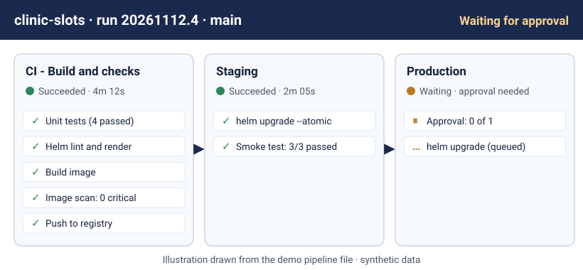
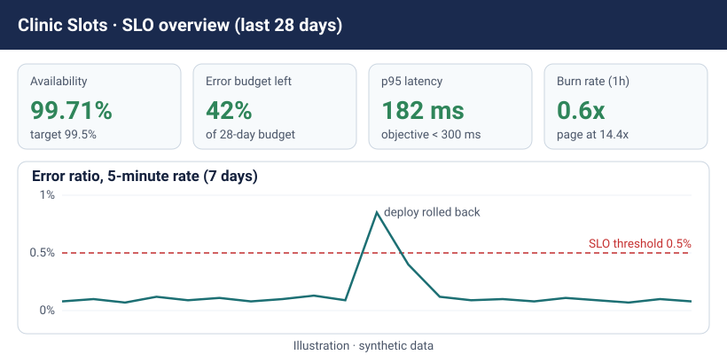
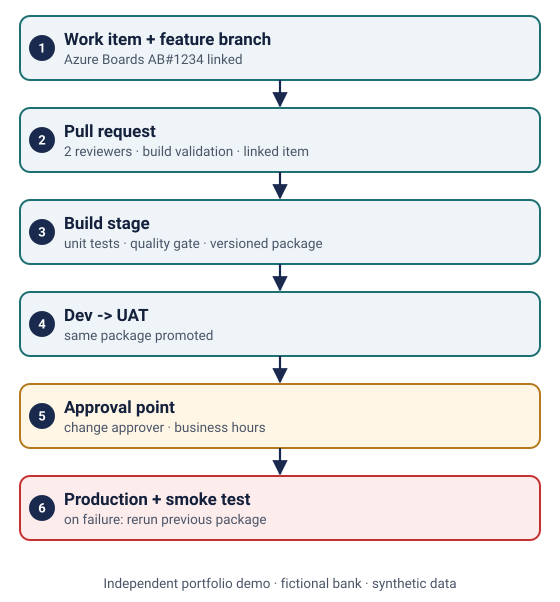
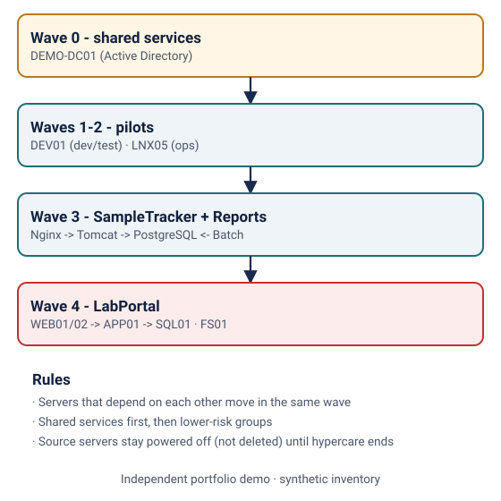
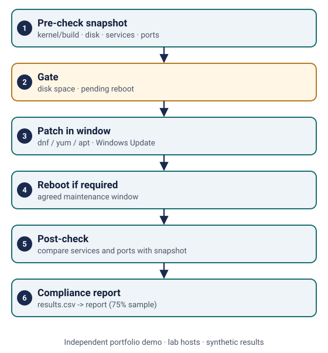

AKS + Helm delivery with SRE
Experience area: healthcare and life sciences SRE.
- Helm chart with probes, HPA and PDB
- CI checks, staging, approved production
- 99.5% SLO, burn-rate alerts, incident runbook
Azure DevOps Engineer with SRE (Site Reliability Engineering) | Azure Infrastructure | Windows & Linux Administration
I'm an Azure DevOps Engineer and Site Reliability Engineer with 9+ years of IT experience. I started as a Linux and Windows system administrator and moved step by step into Azure infrastructure, CI/CD pipelines, Kubernetes (AKS) and reliability work for life sciences, banking and asset-management clients. I like simple pipelines that teams can trust, infrastructure as code, clear runbooks and calm incident handling.
Open to fully remote roles only Based in India · Notice period: 15 days
Hi, I’m Vamsikrishna Gollapudi. I work in Azure DevOps and Site Reliability Engineering. My background includes Azure infrastructure, CI/CD pipelines, Kubernetes, and Windows and Linux administration. I started in systems administration and moved into cloud infrastructure, automation and reliability. In this portfolio, you can explore practical demos on Azure deployments, monitoring, migration and server patching. I’m based in India and currently looking for fully remote roles only. Thanks for visiting.
Full details: view resume (view only).
Illustrations drawn from the demo's pipeline and SLO files, using synthetic data.


Five independent portfolio demos built on fictional systems, synthetic data and original example files. They are separate from my employment history above and use no client assets or production configuration.
Experience area: healthcare and life sciences SRE.

Experience area: banking DevOps.

Experience area: financial services cloud infrastructure.

Experience area: life sciences migration.

Experience area: Windows and Linux administration.
A compact checklist I follow, with links to the demo that shows each topic.
fmt, validate and plan review on every pull requestCertifications: Microsoft Certified Azure Administrator Associate (AZ-104), Azure Fundamentals (AZ-900), Kubernetes and Cloud Native Associate (KCNA).
Looking for fully remote Azure DevOps, SRE, Azure Infrastructure or Platform Engineer roles, open to candidates based in India.
Email: Gollapudi.vamsi18@gmail.com · GitHub: github.com/gollapudivamsi18